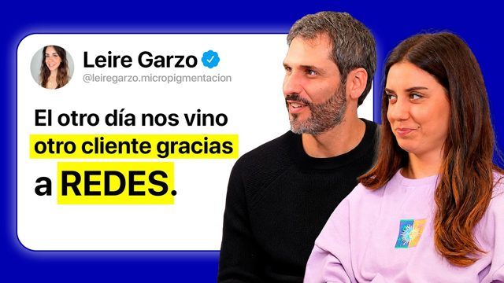
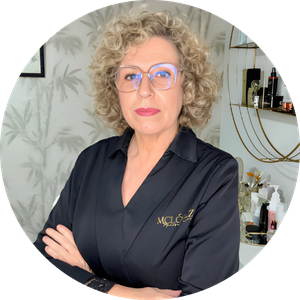

▶
▶ Dra Marina GarridoClínica de injertos capilares
Dra Marina GarridoClínica de injertos capilares“Nos dais tranquilidad, seguridad y resultados”
+1,2 millones de visitas en los primeros 3 meses de forma orgánica en Instagram y TikTok.
Entrevistas con nuestros clientes, donde son ellos mismos los que cuentan, con sus propias palabras, los beneficios de trabajar con Mediatic y cómo ha cambiado su negocio desde que lo hacen.
▶Dra Marina GarridoClínica de injertos capilares+1,2 millones de visitas en los primeros 3 meses de forma orgánica en Instagram y TikTok.
 ▶
▶ Gisela JorbaMicropigmentación
Gisela JorbaMicropigmentaciónHa aumentado medio año la lista de espera de su centro y cientos de personas han comprado sus cursos.
 ▶
▶ Mario CozmaTransporte y logística
Mario CozmaTransporte y logísticaMás de 70.000 seguidores en Instagram y más de 10 vídeos por encima de 1.000.000 de visualizaciones.
 ▶
▶ Duna AtelierEspecialista en prótesis de areola
Duna AtelierEspecialista en prótesis de areolaMás de 790.000 visualizaciones en 3 meses de forma totalmente orgánica.
 ▶
▶ Karoma EstilistasPeluquería
Karoma EstilistasPeluqueríaTiene varios vídeos en su cuenta de +300K, +200K, +100K y +50.000 visualizaciones, y mucha gente ha acudido interesada a su centro.
 ▶
▶ De ProfundisBuceo técnico
De ProfundisBuceo técnicoPosicionado como referencia en su sector, con varios vídeos de +100.000 reproducciones.
 ▶
▶ Pedro SEOSEO y marketing
Pedro SEOSEO y marketingSus vídeos le atraen clientes para su agencia y alumnos para su formación.
 ▶
▶ Pol CorominasMarca personal
Pol CorominasMarca personalCualquier empresa debería invertir en redes sociales y en vosotros.
 ▶
▶ Claudia&JuliaE-commerce de cocina
Claudia&JuliaE-commerce de cocinaAhorran más de 15 horas al mes en contenido y tienen muchos más resultados.
 ▶
▶ Estela Salón de BellezaPeluquería y estética
Estela Salón de BellezaPeluquería y estéticaEn 6 horas tiene el contenido de redes sociales de su negocio para 3 meses.
 ▶
▶ Solucions EmpresarialsLegal y normativas
Solucions EmpresarialsLegal y normativasEn los primeros 3 meses trabajando juntos, vídeos con +450.000, +100.000 y +90.000 visualizaciones.
 ▶
▶ SD FinanceAsesoría financiera
SD FinanceAsesoría financieraEn tan solo 2 meses ya ha captado más de 4 clientes para su negocio.

▶Se han dado a conocer y captan clientes gracias al contenido de redes.
Invierte menos de 6 horas cada 3 meses en crear contenido y en tener sus redes activas.

Mari Carmen LópezMicropigmentaciónAntes hacía lo que podía con mi contenido, ahora me encanta y luce increíble.
Clientes satisfechos
Más de 100 empresas y profesionales ya han confiado en nuestro equipo para hacer crecer sus redes sociales.
Descubre lo que opinan en Google sobre Mediatic.
“Llevo tiempo trabajando con Roger y Steve y no puedo estar más contento con sus servicios. Son creativos, profesionales y siempre entregan contenido de calidad adaptado a lo que necesito. Si quieres crecer en redes sociales, pruébalos.”
“Gente muy profesional!”
“Buen trabajo por su parte durante un evento gastronómico en Barcelona, ¡Muchas gracias!”
“Nos crearon un vídeo promocional para dar visibilidad a nuestro proyecto. Grandes profesionales, creativos y de trato cercano y ágil.”
“Unos grandes profesionales. La calidad de su trabajo en redes, cuidando todos los detalles, los hace una opción importante para dar a conocer una marca, un proyecto, una idea. ¡Gracias!”
“Llevamos trabajando con ellos más de 8 meses y muy contentos, son muy top. ¡Espero que sigan así muchos años!”
“Destaco su profesionalidad, su cercanía y la facilidad para trabajar con ellos. Un equipo creativo, resolutivo y muy alineado con lo que necesita cualquier negocio.”
“Nos ha encantado trabajar juntos. La grabación fue súper efectiva: grabamos todo lo propuesto y los chicos hicieron incluso más de lo que se pedía. Un placer.”
Descubre si podemos hacer un x5 en tus visitas y leads.
Mediatic | Agencia de Creación de Contenido Viral para Redes Sociales
Plaça Pau Casals, 96 - Sant Fruitós de Bages, Barcelona (08272)
Rellena nuestro formulario, te llevará menos de 2 minutos.
Rellenar el formulario →